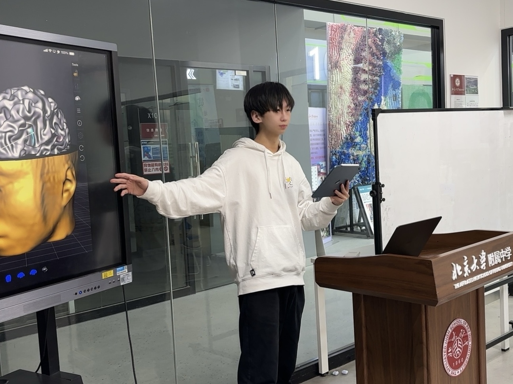
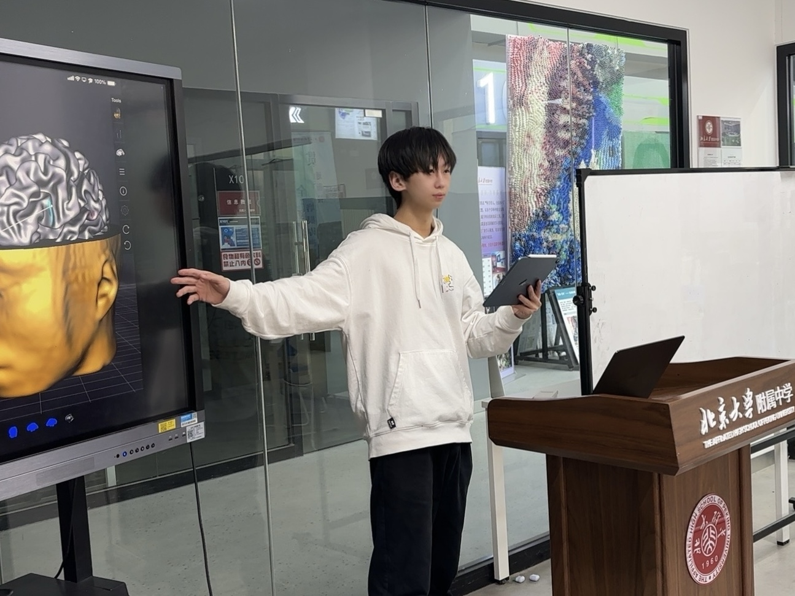

A dreamy fusion of neuroscience, technology, and innovative research. Join us as we explore the mysteries of the brain, exchange knowledge, and lead the forefront of cognitive science.
The brain-gut axis is a two-way communication system between the central nervous system (CNS) and enteric nervous system (ENS), and recent studies have highlighted the critical role of gut microbes in regulating brain-gut axis function.
DOI: 10.31234/osf.io/n8fwq_v1
This study explores the relationship between romantic desire and mental imagery. A questionnaire survey of 218 high school students was conducted to evaluate how mental imagery affects romantic feelings and their persistence.
DOI: 10.25236/FSST.2023.051018
We offer neuroscience courses within the school that provide technical credits. Our courses combine theory with practical research experience.
 

Hear from students and experts from Peking University as they share insights on the latest developments in neuroscience.